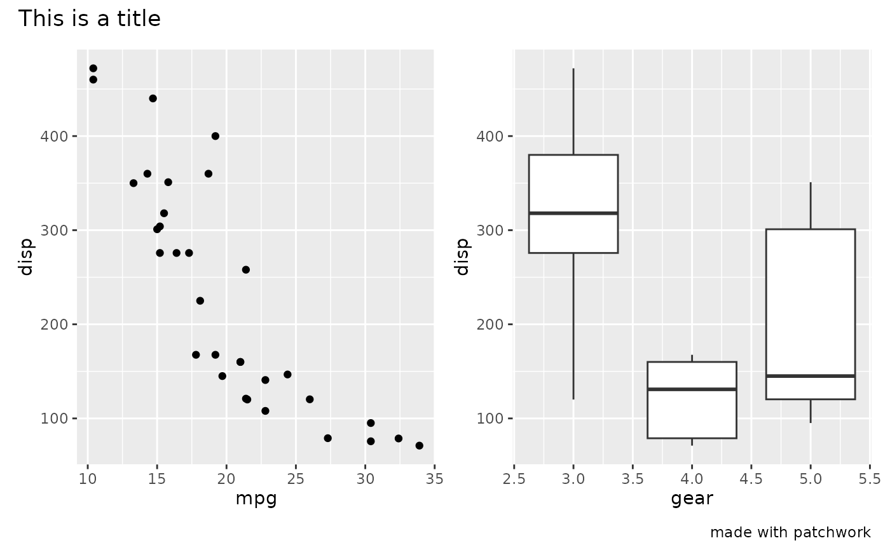
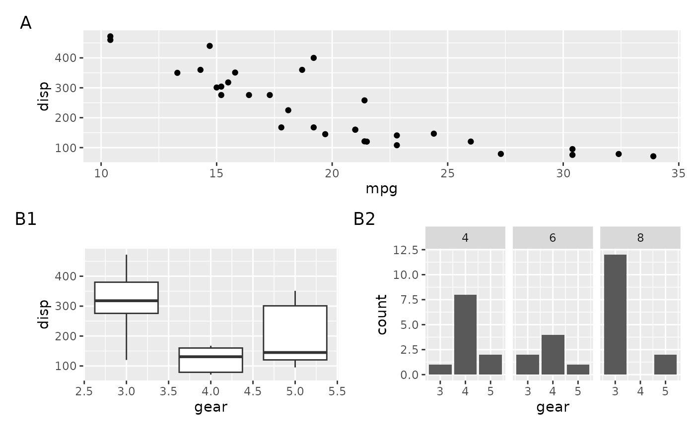
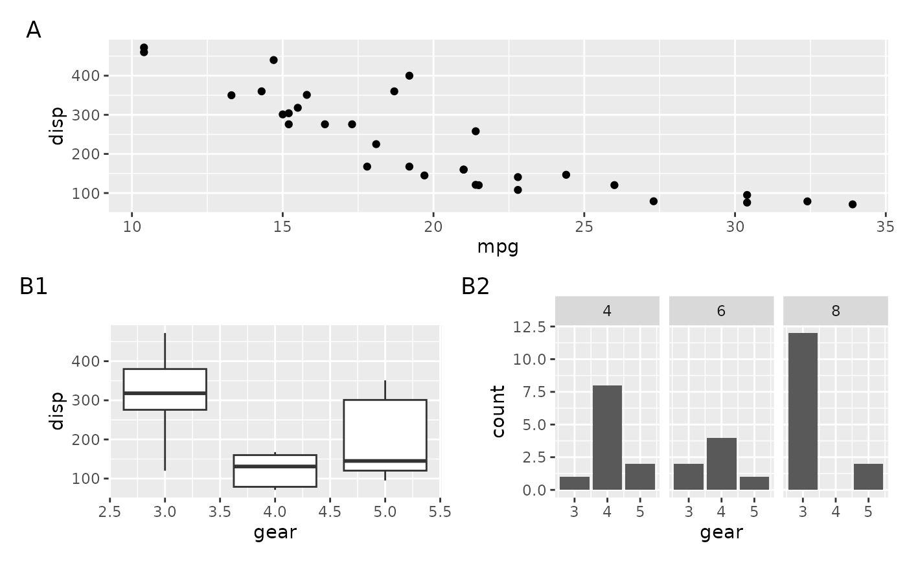

The result of this function can be added to a patchwork using + in the same
way as plot_layout(), but unlike plot_layout() it will only have an
effect on the top level plot. As the name suggests it controls different
aspects of the annotation of the final plot, such as titles and tags. Already
added annotations can be removed by setting the relevant argument to NULL.
Arguments
- title, subtitle, caption
Text strings to use for the various plot annotations.
- tag_levels
A character vector defining the enumeration format to use at each level. Possible values are
'a'for lowercase letters,'A'for uppercase letters,'1'for numbers,'i'for lowercase Roman numerals, and'I'for uppercase Roman numerals. It can also be a list containing character vectors defining arbitrary tag sequences. If any element in the list is a scalar and one of'a','A','1','i, or'I', this level will be expanded to the expected sequence.- tag_prefix, tag_suffix
Strings that should appear before or after the tag.
- tag_sep
A separator between different tag levels
- theme
A ggplot theme specification to use for the plot. Only elements related to the titles as well as plot margin and background is used.
Details
Tagging of subplots is done automatically and following the order of the
plots as they are added. When the plot contains nested layouts the
tag_level argument in the nested plot_layout will define whether
enumeration should continue as usual or add a new level. The format of the
levels are defined with tag_levels argument in plot_annotation
Examples
library(ggplot2)
p1 <- ggplot(mtcars) + geom_point(aes(mpg, disp))
p2 <- ggplot(mtcars) + geom_boxplot(aes(gear, disp, group = gear))
p3 <- ggplot(mtcars) + geom_bar(aes(gear)) + facet_wrap(~cyl)
# Add title, etc. to a patchwork
p1 + p2 + plot_annotation('This is a title', caption = 'made with patchwork')

# Change styling of patchwork elements
p1 + p2 +
plot_annotation(
title = 'This is a title',
caption = 'made with patchwork',
theme = theme(plot.title = element_text(size = 16))
)
# Add tags to plots
p1 / (p2 | p3) +
plot_annotation(tag_levels = 'A')
 # Add multilevel tagging to nested layouts
p1 / ((p2 | p3) + plot_layout(tag_level = 'new')) +
plot_annotation(tag_levels = c('A', '1'))

# Use a custom tag sequence (mixed with a standard one)
p1 / ((p2 | p3) + plot_layout(tag_level = 'new')) +
plot_annotation(tag_levels = list(c('&', '%'), '1'))
# Add multilevel tagging to nested layouts
p1 / ((p2 | p3) + plot_layout(tag_level = 'new')) +
plot_annotation(tag_levels = c('A', '1'))

# Use a custom tag sequence (mixed with a standard one)
p1 / ((p2 | p3) + plot_layout(tag_level = 'new')) +
plot_annotation(tag_levels = list(c('&', '%'), '1'))